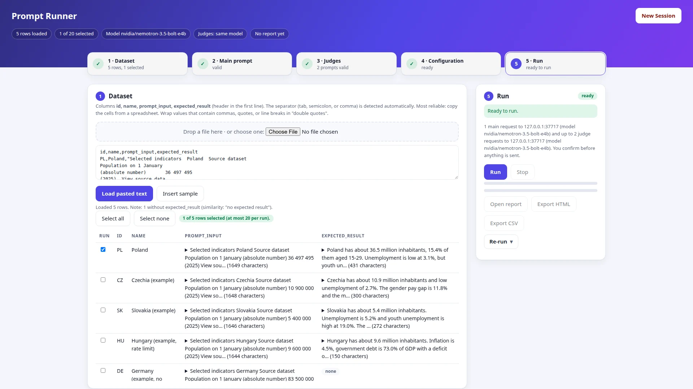
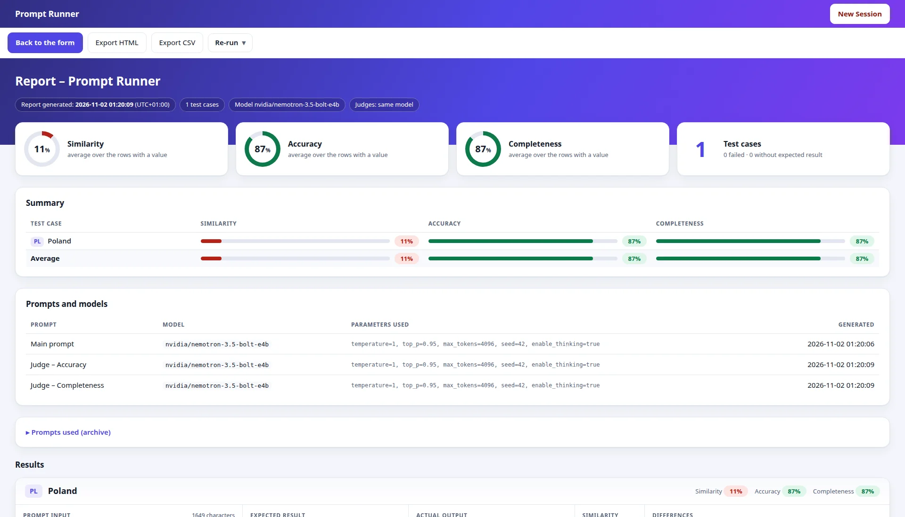
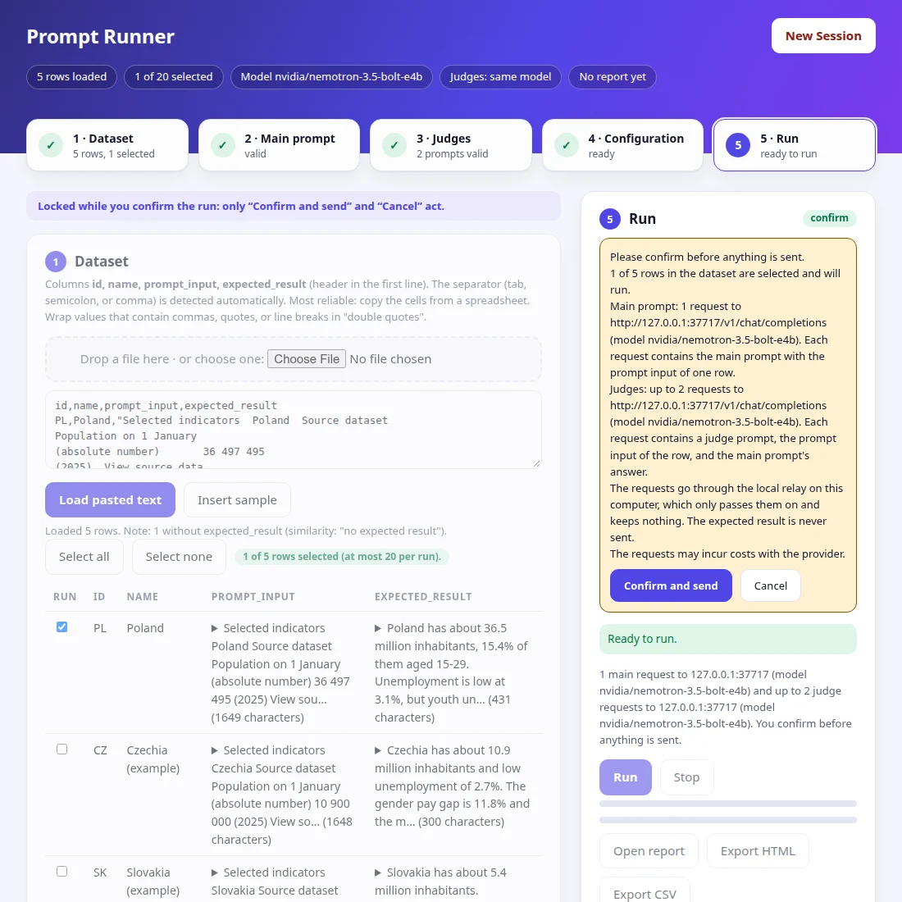
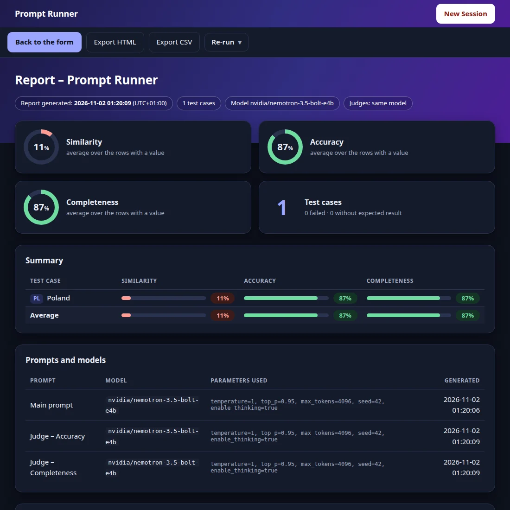
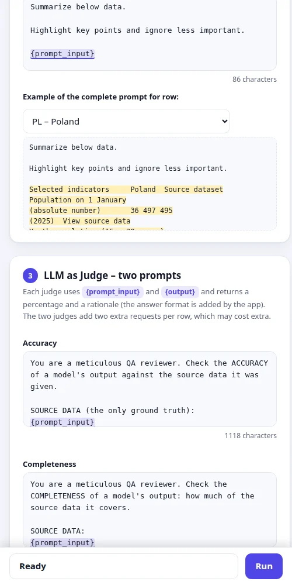
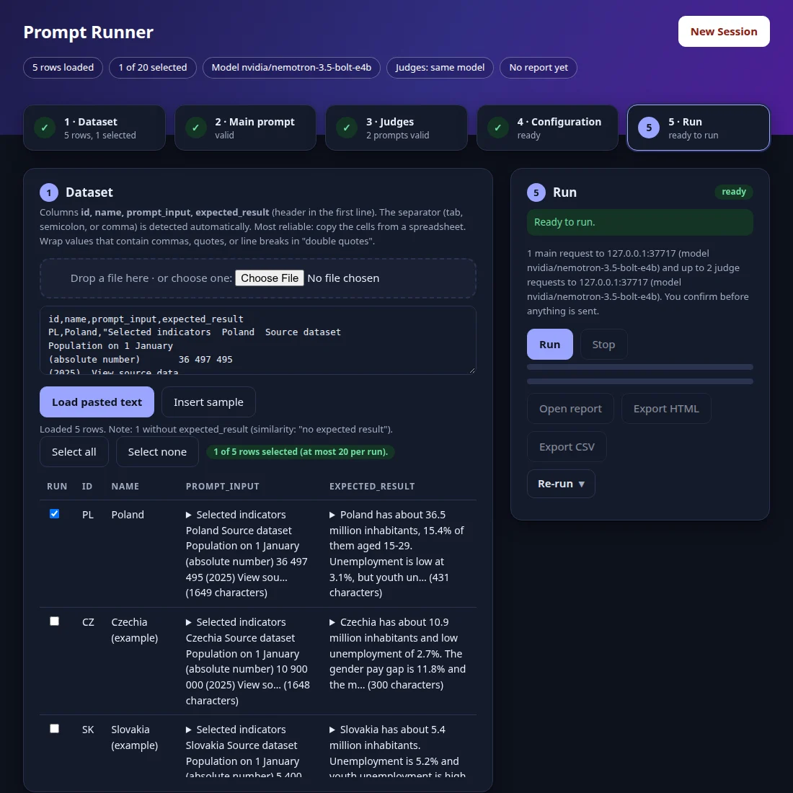

What it does
You load a dataset, edit a main prompt, review two ready-made QA judge prompts, run everything against a model endpoint, and read an HTML report that you can export as HTML or CSV.
Dataset in, report out
Paste text or drop a file with id, name, prompt_input, expected_result. Up to 20 rows per run.
Two QA judges
Accuracy and Completeness, each with a percentage and a rationale. Both prompts are yours to edit.
Any chat endpoint
NVIDIA-hosted models by default; any endpoint with the same request shape works.
You confirm first
Before anything is sent, you see how many requests go to which endpoint and what data they hold.
Smart re-runs
All, only failing main prompts, all judges, or only failing judges, with the request count shown first.
Light, dark, keyboard
Follows your system theme, works from 500 to 1920 px, and the whole flow needs no mouse.
Five steps
Press New Session, then fill the page from top to bottom.
- DatasetPaste or drop your rows and tick the ones to run.
- Main promptWrite the prompt with
{prompt_input}and preview it for any row. - LLM as JudgeReview the Accuracy and Completeness prompts that use
{prompt_input}and{output}. - ConfigurationSet the endpoint, the API key, and one JSON with the model and its parameters.
- RunConfirm what will be sent, and read the report when the run ends.
The page and the report
The report shows averages, a summary table, the prompts and models used, and one card per test case with the differences between the expected result and the actual output.





The screenshots were taken against a fake local platform, so the model answers in them are placeholders. Open the example report to see a complete one.
Privacy by design
Your key and your data go only to the endpoint you configured, through a relay that runs on your own computer.
places where a key is written: no file, browser storage, log, URL, or export.
the only address the local server listens on.
dependencies. The code is plain Node.js and plain browser modules.
npm run audit:key searches for a typed key in every place it could be left behind.
Quick start
You need Node.js 22 or newer. Nothing else.
git clone https://github.com/wzlinedi/prompt-runner.git
cd prompt-runner
node app/server.mjsOpen the address it prints (default http://127.0.0.1:8787), press New Session, click Insert sample, enter your API key, and run.
Prefer to be guided? Open the cloned folder in an AI coding assistant such as Claude Code and ask it to set up Prompt Runner. It reads AGENTS.md, checks Node.js, starts the app, and opens the page. You only enter your data, your prompts, the endpoint, and the key, and you type the key into the page yourself.
This page is only a presentation. Prompt Runner is a local tool and cannot be hosted as a website: the relay that forwards your requests must run on your computer, so that your key never reaches a third party.